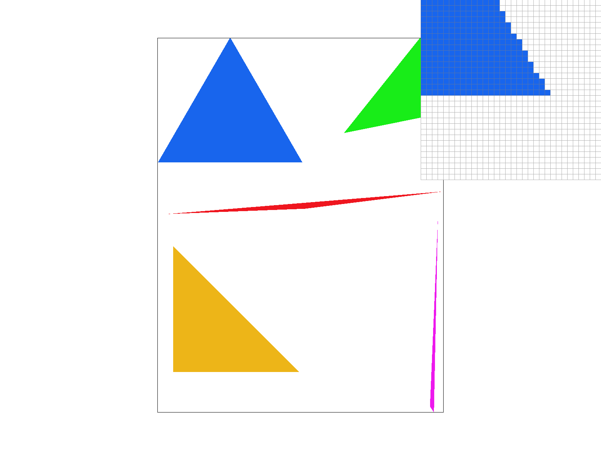
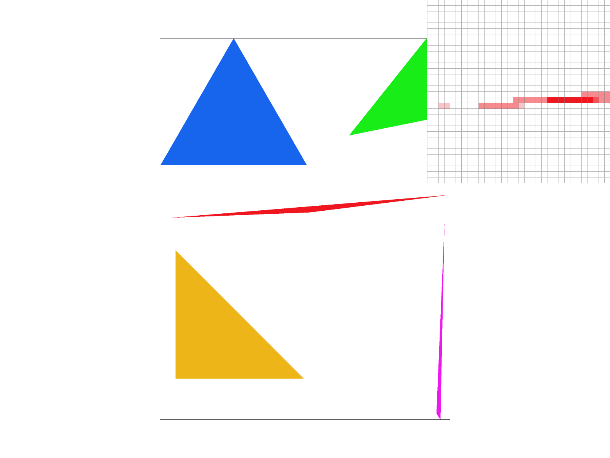
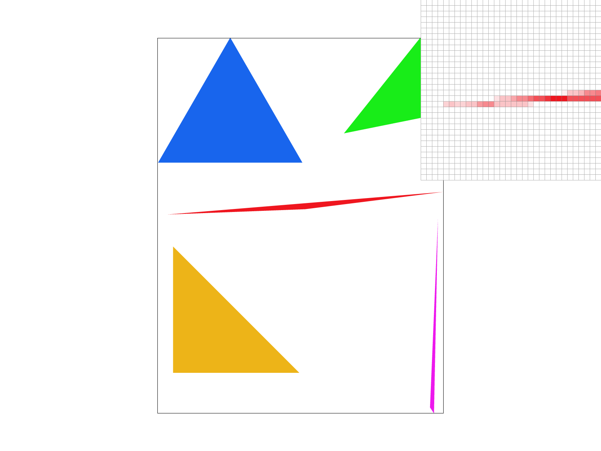
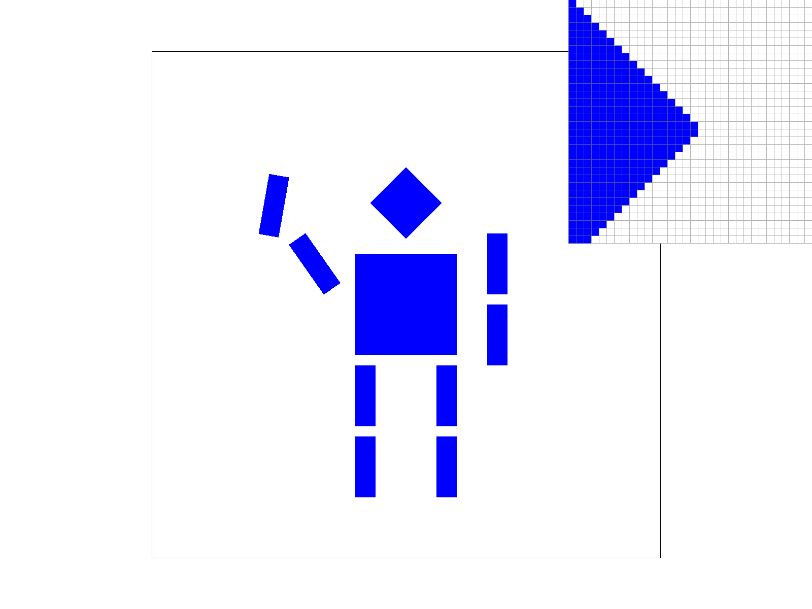
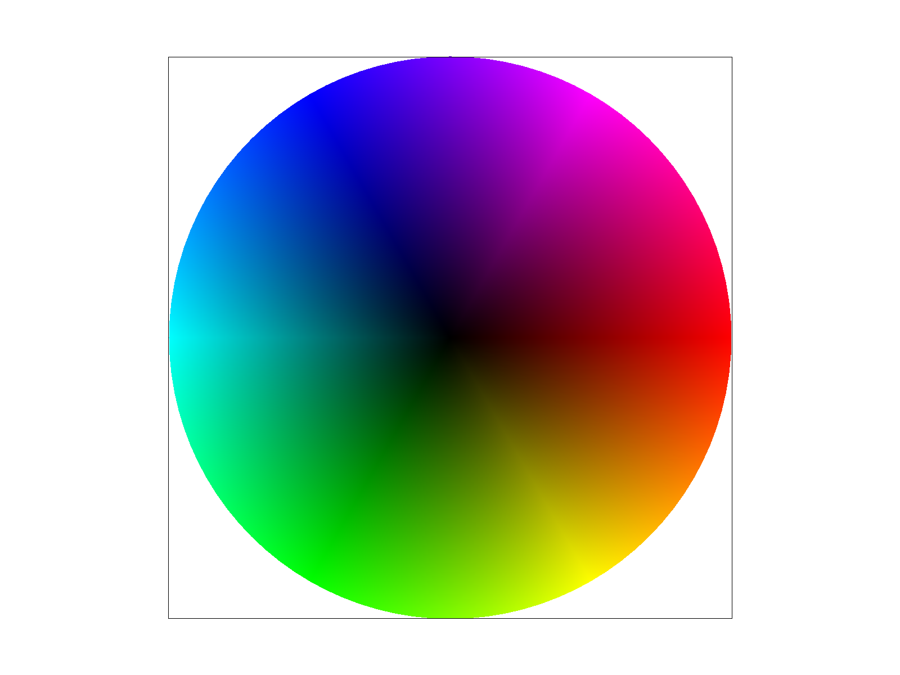
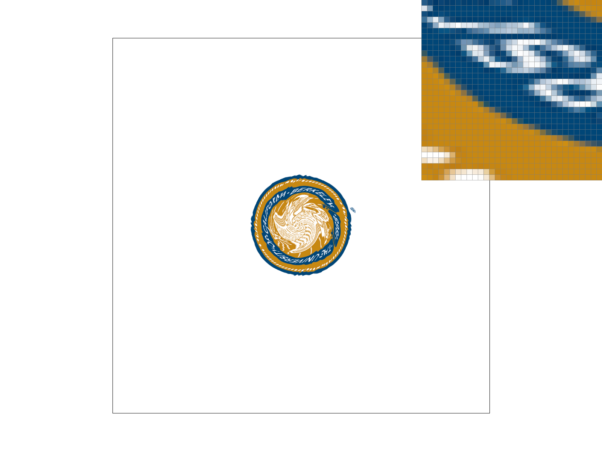
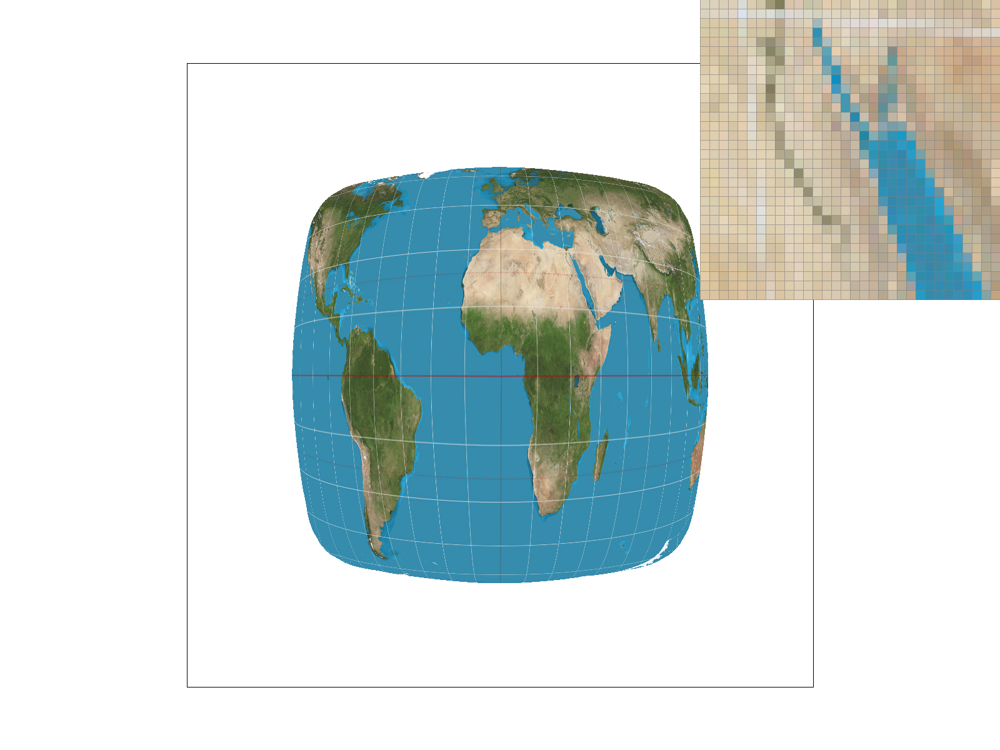

CS184/284A Spring 2025 Homework 1 Write-Up
Link to GitHub repository: https://github.com/cal-cs184-student/hw1-rasterizer-jonjon
Overview
In this homework, I implemented a functional rasterizer capable of drawing triangles with single colors, interpolated colors, and textures using various sampling techniques. I built a pipeline that supports supersampling for antialiasing, coordinate transformations, and hierarchical level sampling with mipmaps. This project taught me the fundamental trade-offs between computational speed, memory usage, and visual quality in computer graphics.
Task 1: Drawing Single-Color Triangles
[cite_start]For the rasterizations, I implemented the standard point-in-triangle test. [cite: 6] [cite_start]I first calculate the bounding box of the triangle by finding the minimum and maximum X and Y coordinates of the three vertices. [cite: 6] [cite_start]This allows me to restrict the search area significantly compared to checking every single pixel in the framebuffer. [cite: 7] [cite_start]I also ensured that these coordinates were clamped to the screen width and height, so the program doesn't crash if a triangle exceeds the bounds. [cite: 8] [cite_start]Once I have the loop set up, I iterate through every single pixel inside the box. [cite: 9] [cite_start]For each pixel, I sampled at the center $(x+0.5, y+0.5)$ and ran the edge function on all three edges of the triangle. [cite: 10] [cite_start]Additionally, to handle both clockwise and counterclockwise winding orders, I just check if the results of the edge tests are either all positive or all negative. [cite: 11] [cite_start]If they match, then the pixel is inside, and I can call fill_pixel. [cite: 12] [cite_start]My algorithm is no worse than checking each sample within the bounding box because it never checks a pixel outside the rectangular bounds defined by the vertices. [cite: 13] [cite_start]This gives me a runtime of O(W X H) instead of O(Screen W X Screen H). [cite: 14]

Task 2: Antialiasing by Supersampling
[cite_start]To implement the supersampling feature, I modified my rasterization to use a larger intermediate buffer, called the sample_buffer. [cite: 18] [cite_start]Instead of storing one color per pixel, this new buffer now stores sample_rate number of colors for each pixel. [cite: 19] [cite_start]I then updated set_sample_rate and set_framebuffer_target to resize this buffer whenever the settings change. [cite: 20] [cite_start]In the triangle rasterization function, I added two nested loops to iterate through a sub-pixel grid for each pixel. [cite: 21] [cite_start]For each sub-pixel, I performed the point-in-triangle test at the sub-pixel's center and stored the result in the sample_buffer. [cite: 22] [cite_start]Finally, in resolve_to_framebuffer, I averaged the colors of all sub-pixels within a single pixel to produce the final antialiased color. [cite: 23]
[cite_start]Supersampling is useful because it softens "stair-step" edges or aliasing by representing partial pixel coverage. [cite: 24] [cite_start]By sampling at a higher frequency and averaging, we create smoother transitions. [cite: 25] [cite_start]At a sample rate of 1, the skinny triangle corners appear disconnected because the single sample point misses the thin geometry. [cite: 27] [cite_start]As the sample rate increases to 4 and 16, these edges become smoother, and the thin tips become more visible. [cite: 28] [cite_start]This happens because the sub-pixels capture partial hits on the triangle, which are then averaged into various shades of the triangle's color. [cite: 29]
 |
 |
Task 3: Transforms
[cite_start]For translation, I created a matrix that shifts coordinates by dx and dy. [cite: 32] [cite_start]Then, for scaling, I adjusted the diagonal elements of the matrix to grow or shrink shapes along the X and Y axes. [cite: 33] [cite_start]And for rotation, I converted the input degrees into radians and then used the standard sine and cosine formulas to rotate the coordinates counterclockwise. [cite: 34] [cite_start]I modified Cubeman to be completely blue and changed its pose so it looks like it is waving with its left arm while its right arm hangs naturally at its side. [cite: 35] [cite_start]To do this, I simply modified the transforms by adding rotation values to the specific arm segments and updating the fill color for all polygons to blue. [cite: 36]

Task 4: Barycentric Coordinates
[cite_start]Barycentric coordinates are a coordinate system that can describe a point's position within a triangle based on its distance from the three vertices. [cite: 40] [cite_start]Essentially, every point inside the triangle can be expressed as a weighted average of the three corners, where the weights always add up to 1. [cite: 41] [cite_start]What I did in the implementation was to rasterize these weights for each sample point during rasterization, by calculating how much influence do the corners have over a specific pixel's coordinates. [cite: 41] [cite_start]By mixing the colors of 3 vertices with these weights, I created smooth color gradients over my entire triangle. [cite: 42]

Task 5: "Pixel sampling" for texture mapping
[cite_start]Pixel sampling is when we take the UV coordinates of a pixel and use them to find the right color from a texture map. [cite: 46] [cite_start]In my implementation, I updated the rasterize_textured_triangle function to calculate these UV coordinates at every sample point by interpolating the vertex using the barycentric math from Task 4. [cite: 47] [cite_start]These coordinates are then used to look up the color in the texture through two different methods. [cite: 47] [cite_start]Nearest neighbor sampling, where we simply round the UV coordinates to the closest integer texel, which is very fast but can look blocky when you zoom in. [cite: 48] [cite_start]Bilinear sampling finds the four closest texels to the sample point and then performs a weighted average based on their distance, which creates a much smoother transition between colors at the cost of computational power. [cite: 48]
[cite_start]Bilinear sampling looks better than nearest sampling in this example. [cite: 55] [cite_start]Nearest sampling causes a "stair-step" look because it forcefully picks one color for the entire region, whereas bilinear sampling creates a smooth gradient between the four nearest colors. [cite: 56] [cite_start]The difference is also most dramatic at 1 sample per pixel because as we increase the sample rate to 16, supersampling helps hide some of the blockiness in Nearest, but Bilinear still provides a more natural and smooth look. [cite: 57]
 |
Task 6: "Level Sampling" with mipmaps for texture mapping
[cite_start]Level sampling is the process of taking the UV coordinates of a pixel and determining which version of a texture from it is the most appropriate based on the pixel's footprint on the screen. [cite: 60] [cite_start]To implement this, I updated rasterize_textured_triangle to calculate the UV coordinates for two adjacent points, $(x+1,y)$ and $(x,y+1)$, using barycentric differentials. [cite: 61] [cite_start]By measuring how much these UVs change across a single pixel, I was then able to calculate the correct mipmap level. [cite: 62] [cite_start]After that, I implemented three sampling methods: L_ZERO for the base texture, L_NEAREST to pick the closest, and L_LINEAR, which linearly interpolates between the two closest mipmap levels. [cite: 63]
[cite_start]There are also significant tradeoffs between speed, memory, and antialiasing power across these techniques. [cite: 64] [cite_start]Pixel sampling prioritizes either speed or smoothness. [cite: 65] [cite_start]Nearest neighbor is fast but creates blocky magnification artifacts, while Bilinear sampling is slightly slower but provides smoother transitions. [cite: 65] [cite_start]Level sampling using mipmaps effectively eliminates "shimmering" in the distance but requires more memory to store pre-filtered levels. [cite: 66] [cite_start]Finally, increasing the sample rate through supersampling offers the highest quality for both edges and textures, but it is the most computationally expensive. [cite: 67]
[cite_start]Level sampling is the most effective at preventing aliasing. [cite: 73] [cite_start]Using L_NEAREST or L_LINEAR significantly reduces the noisy artifacts seen in the far distance compared to L_ZERO. [cite: 73] [cite_start]Furthermore, when combined with Bilinear pixel sampling, the result is a cleaner image that avoids both blockiness and high-frequency noise. [cite: 74]
 |
|
 |